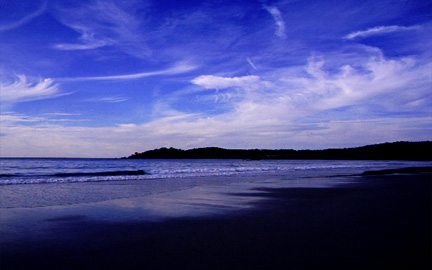

Clouds in Motion

"Clouds in Motion" was also taken in February at Carmel beach. This was
not the same day or roll as "Out-going Tide". There was a period of about
a week were the tide was extremely low in the afternoon with a strong high-pressure
system creating beautiful cloud patterns.